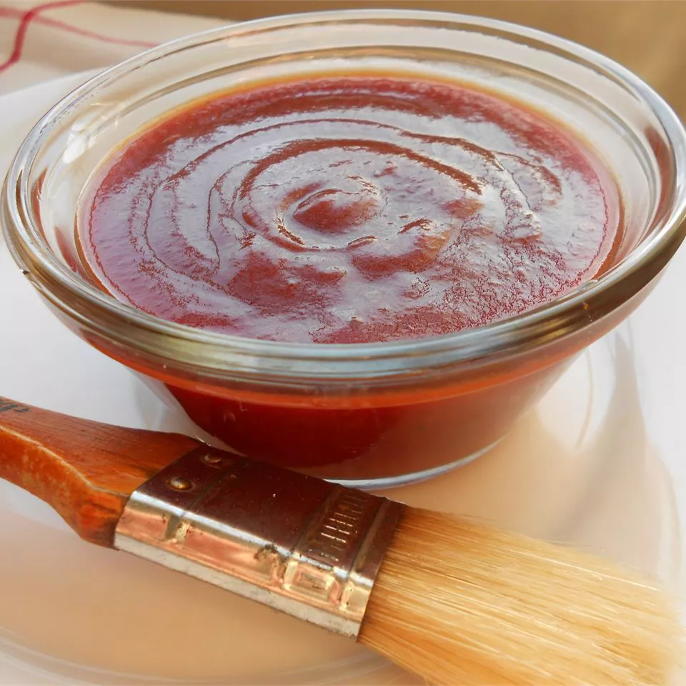

BBQ Sauce

This is a Kansas City-style BBQ sauce recipe that we make in our restaurant.
It is sweet and smoky with a little bite.
Ingredients
- 2 cups ketchup
- 2 cups tomato sauce
- 1 1/4 cups brown sugar
- 1 1/4 cups red wine vinegar
- 1/2 cup un-sulfured molasses
- 2 tablespoon butter
- 4 teaspoon hickory-flavored liquid smoke
- 1 teaspoon salt
- 1 teaspoon paprika
- 1/2 teaspoon garlic powder
- 1/2 teaspoon onion powder
- 1/2 teaspoon celery seed
- 1/2 teaspoon cayenne pepper
- 1/4 teaspoon chili powder
- 1/4 teaspoon ground cinnamon
- 1 teaspoon coarsely ground black pepper
Steps
-
One
Mix together ketchup, tomato sauce, brown sugar, wine vinegar,
molasses, butter, and liquid smoke in a large saucepan over medium
heat. Season with salt, black pepper, paprika, garlic powder, onion
powder, celery seed, cayenne, chili powder, and cinnamon.
-
Two
Reduce heat to low and simmer for up to 20 minutes. For a thicker
sauce, simmer longer, and for thinner, less time is needed. Sauce
can also be thinned using a bit of water if necessary.
Home